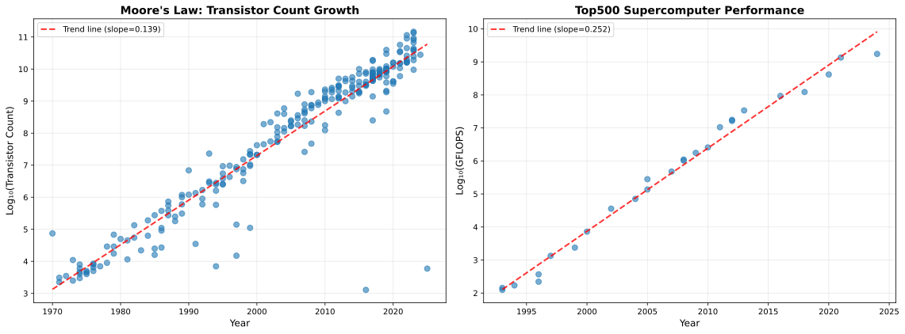
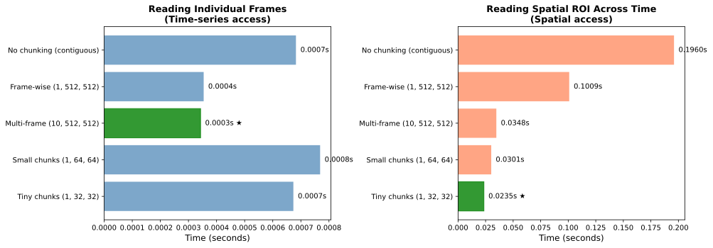
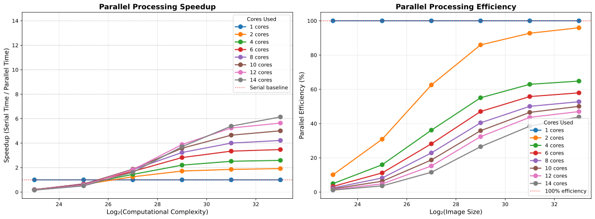
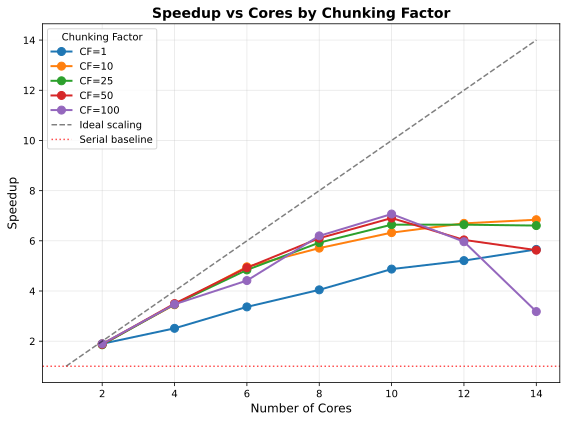
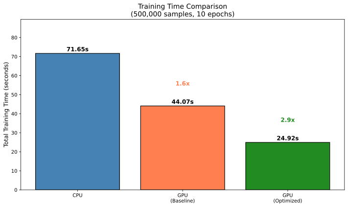

10 Optimizing performance
The computing power available to scientists has increased in a shockingly consistent way since the first microprocessors were manufactured in the 1970’s. The left panel in Figure 10.1 shows that the number of transistors on commercial CPU chips has doubled about every two years since the 1970s, very close to the two year doubling time predicted by Gordon Moore in 1975 (Moore et al. 1975). The number of transistors relates only indirectly to the computing power of the machine, and the right panel in Figure 10.1 shows that the computer power of the world’s top supercomputer (measured in the number of floating point operations per second) has increased even faster, doubling roughly every 1.2 years.

To put this into a personal perspective, I published my first paper using computer simulations in 1996 (Poldrack 1996), based on simulations I had performed in 1994-5 as a graduate student. I ran my simulations on a Power Macintosh, and I remember them taking many hours to complete, but let’s say that I had access to the top supercomputer of the day back in 1994. The top supercomputer in 2025 was more than ten million times faster than the top machine in 1994. If simulation time scaled directly with processor speed, this would mean that a simulation that takes one minute on the latest machine would have taken over 19 years in 1994! This kind of scaling is not generally true; as we will discuss below and in the next chapter on high-performance computing, there are many factors beyond CPU speed that can limit the speed of computing operations. Further, taking advantage of these new systems requires the use of parallel processing, which often requires substantial changes in software architecture.
I raise these comparisons to highlight the fact that any attempts to optimize the performance of our code will often be much less effective than simply finding a more powerful computer. However, it’s often the case that small changes in our code can have significant performance impacts. In this chapter I will highlight the ways in which one can judiciously optimize the performance of code without significantly impacting the quality of the code.
10.1 Avoiding premature optimization
Donald Knuth, one of the founders of the modern field of computer science, is famous for saying the following about code optimization (Knuth 1974):
The real problem is that programmers have spent far too much time worrying about efficiency in the wrong places and at the wrong times; premature optimization is the root of all evil (or at least most of it) in programming.
I think that it’s important to know how to optimize code, but also important to know when to optimize code and when not do do so. In their book The Elements of Programming Style, Kernighan & Plauger (1978) proposed a set of organizing principles for optimization of existing code that highlight the tradeoffs involved in optimization:
“Make it right before you make it faster”
“Make it clear before you make it faster”
“Keep it right when you make it faster”
That is, there is a tradeoff between accuracy, clarity, and speed that one must navigate when optimizing code. I would focus on optimization after you have code that runs on a small example problem, and any of the following occurs:
Something simple seems like it’s taking much longer than it seems like it should
Scaling to larger problems takes exceedingly long and you don’t have access to a larger computer system
10.2 A brief introduction to computational complexity
Computational complexity refers to how the resources needed to solve a particular problem with a particular algorithm scale with the size of the input. We usually describe complexity in terms of what is known as “big-O” notation, describing how the resources (such as time or memory) needed to solve the problem scales with the size of the input. More precisely, it provides an upper bound on the scaling, ignoring constant and lower-order factors. For example, an \(O(N)\) problem scales linearly with the size of the input, an \(O(N^2)\) problem scales quadratically, and an \(O(2^N)\) scales exponentially. In general we would consider problems with exponential scaling to be practically uncomputable for anything but the smallest datasets. It’s important to keep in mind that these not meant to reflect actual performance, but rather meant to classify problems in terms of their worst-case difficulty as the input grows. The fact that constant and lower-order factors are ignored also means that complexity differences may not become evident in real performance until inputs get very large.
There are two aspects of complexity that are important to understand. First, any particular problem has a lower bound on its complexity, such that no algorithm can perform better than this bound. For example, finding the minimum of a list of numbers is \(O(N)\), since finding the minimum requires looking at all of the numbers (at least), and thus no algorithm can do better than \(O(N)\). Comparison-based sorting of a list, on the other hand, is \(O(N log N)\), because it takes about \(log_2 N\) splits of a list to get to the individual elements. Second, while the problem defines the lower bound, different algorithms may scale differently with input size for the same problem. For example, merge sort (which recursively splits lists into half and then interleaves them) achieves the lower bound of \(O(N log N)\) since an \(O(N)\) operation is required for each merge. On the other hand, bubble sort, which repeatedly scans the list and swaps elements that are out of order, is \(O(N^2)\) since each scan is \(O(N)\) and it can take up to N scans, and thus fails to achieve optimal performance.
One important place where complexity is useful, and a bit tricky, is in thinking about loops. It’s generally not possible to tell the complexity implications from the looping structure itself, since it depends on what is being done within each loop. For example, take the following function:
def find_duplicates(items: list) -> list:
duplicates = []
for item in items:
if items.count(item) > 1 and item not in duplicates:
duplicates.append(item)
return duplicatesThis might seem like it would be \(O(N)\) since it simply loops through the items. However, if we look at the operations that are being performed, we see that the .count() operation is \(O(N)\) (since it needs to look at all items) and the item not in duplicates needs to traverse an unknown portion of the list depending on the number of duplicates. Thus, this procedure is \(O(N^2)\), since the count operation alone is \(O(N)\) and must be performed N times. On the other hand, take the following code:
def validate_records(records: list) -> None:
for record in records:
for field in ['name', 'email', 'phone']:
validate_field(record, field)This has two levels of looping, but only one of the levels scales with the number of records, so it is still \(O(N)\).
In addition to time complexity, it’s also important to keep in mind the memory complexity of algorithms. Scientific work with large datasets will often run into memory limits before it hits time limits, meaning that the scaling of memory with input size must also be taken into account in considering algorithms for a problem.
10.3 Code profiling
Complexity analysis tells us about the worst case performance of our code, but there are many reasons for slow code even when complexity is low. Profiling is the activity of empirically analyzing the performance of our code in order to identify specific parts of the code that might cause poor performance. It’s often the case that slow performance arises from specific portions of the code, which we refer to as bottlenecks. These bottlenecks can be difficult to intuit, which is why it’s important to empirically analyze performance in order to identify the location of those bottlenecks, which can then help us focus our efforts. However, it’s also important to keep complexity in mind when we analyze code; in particular, we should always profile the code using realistic input sizes, so that we will see any complexity-related slowdowns if they exist.
There are a couple of important points to know when profiling code. First, it’s important to remember that profiling has overhead and can sometimes distort results. In particular, when code involves many repetitions of a very fast operation, the overhead due to profiling the operation can add up, making it seem worse than it is. The profiler can also compete with your code for memory and CPU time, potentially distorting results (e.g. for processes involving lots of memory). Second, it’s important to keep in mind the distinction between CPU time, which refers to the time actually spent by the CPU doing processing, and wall time, which includes CPU time as well as time due to other sources such as input/output. If the wall time is much greater than the CPU time, then this suggests that optimizing the computations may not have much impact on the overall execution time. Also note that sometimes the CPU time can actually be greater than the wall time if multiple cores are used for the computation, since the time spent by each core is added together.
Tip
Always profile before you optimize, as our intuitions about software performance are very often wrong.
10.3.1 Function profiling
Function profiling looks at the execution time taken by each function. Let’s say that we have two different implementations of a function, in this case using functions to find duplicates in an array of numbers, where one is efficient and one is inefficient:
def find_duplicates_inefficient(data: list) -> list:
duplicates = []
seen = []
for item in data:
if item in seen:
if item not in duplicates:
duplicates.append(item)
else:
seen.append(item)
return duplicates
def find_duplicates_efficient(data: list) -> list:
duplicates = set()
seen = set()
for item in data:
if item in seen:
duplicates.add(item)
else:
seen.add(item)
return list(duplicates)These functions look remarkably similar, so it wouldn’t be obvious that one is much slower than the other unless we know the details of Python data structures. We can use the cProfile package to profile these two functions (with some additional printing statements removed):
import cProfile
import pstats
import io
import \textit{NumPy} as np
def compare_duplicate_finding(data_size: int = 10000) -> None:
data = list(range(data_size)) + list(range(data_size // 2))
np.random.shuffle(data)
profiler = cProfile.Profile()
profiler.enable()
result = find_duplicates_inefficient(data)
profiler.disable()
s = io.StringIO()
ps = pstats.Stats(profiler, stream=s).sort_stats("cumulative")
ps.print_stats(10)
# Profile efficient version with set
profiler = cProfile.Profile()
profiler.enable()
result = find_duplicates_efficient(data)
profiler.disable()
s = io.StringIO()
ps = pstats.Stats(profiler, stream=s).sort_stats("cumulative")
ps.print_stats(10)The output shows the relative timing of each of the functions:
Profiling duplicate finding with list (data_size=10000):
(Using 'if item in seen_list' is O(n) each time)
---------------------------------------------------------------------
15002 function calls in 0.310 seconds
Ordered by: cumulative time
ncalls tottime percall cumtime percall filename:lineno(function)
1 0.308 0.308 0.310 0.310 profiling_example.py:72(find_duplicates_inefficient)
15000 0.001 0.000 0.001 0.000 {method 'append' of 'list' objects}
1 0.000 0.000 0.000 0.000 {method 'disable' of '_lsprof.Profiler' objects}
Profiling duplicate finding with set (data_size=10000):
(Using 'if item in seen_set' is O(1) each time)
---------------------------------------------------------------------
15002 function calls in 0.002 seconds
Ordered by: cumulative time
ncalls tottime percall cumtime percall filename:lineno(function)
1 0.001 0.001 0.002 0.002 profiling_example.py:92(find_duplicates_efficient)
15000 0.001 0.000 0.001 0.000 {method 'add' of 'set' objects}
1 0.000 0.000 0.000 0.000 {method 'disable' of '_lsprof.Profiler' objects}Here we can see that there is a huge difference in the time taken by the two functions (0.31 seconds versus 0.002 seconds). This is due to the fact that membership (in) operations on sets are \(O(1)\) whereas membership operations on lists are \(O(N)\). Once they are put into a loop this becomes \(O(N)\) versus \(O(N^2)\), which can make a huge difference as the number of inputs increases.
I also learned something quite interesting in the process of writing this example. I worked with my coding agent to generate code for examples of problems where there might be a subtle issue that could cause a bottleneck. In several cases, the agent generated code that was meant to demonstrate major performance bottlenecks, but the bottlenecks didn’t actually occur. The reason was that those particular issues were once problematic, but the latest version of the CPython interpreter (the standard implementation of Python) is now optimized to eliminate the bottlenecks! This highlights the importance of verifying claims made by coding agents rather than blindly trusting them. It also shows how optimization is a moving target, since code that was inefficient in a previous Python version can become optimal in a later version.
10.3.2 Line profiling
In the previous examples, we saw that there were functions that took a long time (such as find_duplicates_inefficient()) but we couldn’t tell why. Line profiling digs even more deeply to measure the time taken to execute each line in the code. We can do this with the same code as above, simply by adding a @profile decorator to each of the functions:
@profile
def find_duplicates_inefficient(data):
...We can then run line profiling using the kernprof tool that is part of the line_profiler module (in this case using the command kernprof -lv line_profiling_example.py), which gives the following output:
Total time: 0.31827 s
File: line_profiling_example.py
Function: find_duplicates_inefficient at line 34
Line # Hits Time Per Hit % Time Line Contents
==============================================================
34 @profile
35 def find_duplicates_inefficient(data):
36 1 0.0 0.0 0.0 duplicates = []
37 1 0.0 0.0 0.0 seen = []
38
39 15001 3715.0 0.2 1.2 for item in data:
40 15000 262284.0 17.5 82.4 if item in seen:
41 5000 48610.0 9.7 15.3 if item not in duplicates:
42 5000 1246.0 0.2 0.4 duplicates.append(item)
43 else:
44 10000 2413.0 0.2 0.8 seen.append(item)
45
46 1 2.0 2.0 0.0 return duplicates
Total time: 0.010041 s
File: line_profiling_example.py
Function: find_duplicates_efficient at line 49
Line # Hits Time Per Hit % Time Line Contents
==============================================================
49 @profile
50 def find_duplicates_efficient(data):
51 1 2.0 2.0 0.0 duplicates = set()
52 1 0.0 0.0 0.0 seen = set()
53
54 15001 3930.0 0.3 39.1 for item in data:
55 15000 2831.0 0.2 28.2 if item in seen:
56 5000 968.0 0.2 9.6 duplicates.add(item)
57 else:
58 10000 2290.0 0.2 22.8 seen.add(item)
59
60 1 20.0 20.0 0.2 return list(duplicates)This confirms that the slowdown comes specifically from the lines in which in is used with a list rather than a set. Specifically, the “per hit” metric shows that line 40 in the inefficient version takes 17.5 units of time, versus 0.2 for the equivalent line (55) in the efficient version. Even if we didn’t know about the optimization of membership testing for Python sets, this would make it clear that those two lines are the place to look to learn more about the slowdown. Note that the @profile decorator is not a built-in Python function, but instead is injected by kernprof when it runs; this, the decorator would need to be removed to avoid a NameError when it was run using the Python interpreter.
The results above also highlight the overhead that occurs with line profiling; while the efficient function took 0.002 seconds to complete in the function profiling example, it took 0.01 seconds in the line profiling example.
10.3.3 Memory profiling
Memory usage is another potential issue that we can investigate using profiling. This becomes a particularly important issue when we start thinking about implementation of many jobs at once on a high-performance computing system, as I will discuss in the next chapter; these systems often require that one specifies not only how many CPU cores one requires for the job, but also how much memory.
As an example we can look at the use of the .copy() method in NumPy. It’s generally good practice to copy a variable before making changes to it, since otherwise the changes may affect the original copied variable (since assignment will refer to the same memory location rather than creating a new object). Here let’s see the memory implications of overusage of the .copy() operation. We will compare two functions, each of which computes the sum of squares for an array of random numbers; we use the @profile decorator from the memory_profiler package to perform memory profiling:
from memory_profiler import profile
@profile
def process_with_copies(n_rows: int = 2000000) -> np.ndarray:
data = np.random.randn(n_rows, 5)
data_copy1 = data.copy()
data_normalized = (data_copy1 - data_copy1.mean()) / data_copy1.std()
data_copy2 = data_normalized.copy()
data_squared = data_copy2 ** 2
data_copy3 = data_squared.copy()
result = data_copy3.sum(axis=1)
return result
@profile
def process_without_copies(n_rows: int = 2000000) -> np.ndarray:
data = np.random.randn(n_rows, 5)
mean = data.mean()
std = data.std()
data_normalized = (data - mean) / std
data_normalized **= 2
result = data_normalized.sum(axis=1)
return resultThe process_without_copies() function doesn’t copy the dataset at all; rather, it only saves transformations on the original data, or performs operations in place (such as **= 2). Running these two functions we see substantial differences in the memory used during execution:
UNNECESSARY COPIES EXAMPLE (BAD VERSION)
=============================================================
Filename: src/bettercode/profiling/unnecessary_copies_bad.py
Line # Mem usage Increment Occurrences Line Contents
=============================================================
22 66.2 MiB 66.2 MiB 1 @profile
23 def process_with_copies(n_rows=2000000):
24 144.7 MiB 78.4 MiB 1 data = np.random.randn(n_rows, 5)
25
26 221.0 MiB 76.3 MiB 1 data_copy1 = data.copy()
27 373.8 MiB 152.8 MiB 1 data_normalized = (data_copy1 - data_copy1.mean()) / data_copy1.std()
28
29 373.8 MiB 0.0 MiB 1 data_copy2 = data_normalized.copy()
30 450.1 MiB 76.3 MiB 1 data_squared = data_copy2 ** 2
31
32 526.4 MiB 76.3 MiB 1 data_copy3 = data_squared.copy()
33 541.7 MiB 15.3 MiB 1 result = data_copy3.sum(axis=1)
34
35 541.7 MiB 0.0 MiB 1 return result
UNNECESSARY COPIES EXAMPLE (GOOD VERSION)
=============================================================
Filename: src/bettercode/profiling/unnecessary_copies_good.py
Line # Mem usage Increment Occurrences Line Contents
=============================================================
22 66.3 MiB 66.3 MiB 1 @profile
23 def process_without_copies(n_rows=2000000):
24 144.7 MiB 78.4 MiB 1 data = np.random.randn(n_rows, 5)
25
26 144.7 MiB 0.0 MiB 1 mean = data.mean()
27 221.0 MiB 76.3 MiB 1 std = data.std()
28 221.2 MiB 0.2 MiB 1 data_normalized = (data - mean) / std
29 221.2 MiB 0.0 MiB 1 data_normalized **= 2
30
31 236.5 MiB 15.3 MiB 1 result = data_normalized.sum(axis=1)
32
33 236.5 MiB 0.0 MiB 1 return resultYou can see that each creation of a copy resulted in a substantial growth in memory usage, leading to more than double the total memory usage. While this might not matter for small datasets, it could have a major impact for large datasets.
There is a caveat to this kind of memory profiling, which is that it is less exact than compute profiling due to its interaction with the Python memory management system, and due to the fact that it samples memory usage at specific points. Python has a garbage collector that removes objects from memory, and sometimes it will do so in the middle of execution, leading to seemingly strange results. For example, on line 29 of the “bad” version above, you can see that a copy was created but there was zero increment, which could reflect the fact that Python performed a garbage collection operation just before creation, or that the operation occurred so quickly that the memory profiler’s sample missed it.
10.3.3.1 Memory profiling in pandas
pandas data frames can exhibit some surprising memory usage features, and memory profiling can often be useful to optimize pandas workflows. pandas has a built-in memory profiling function for data frames, called pandas.memory_usage(). Here we will use this to see an example of a surprising memory usage feature. We first create functions to generate a data frame with a number of string variables, and to analyze the memory footprint of the data frame. Note that it’s important to use deep=True when using the memory analyzer, since otherwise it will only report the size of the pointers in memory and not the size of the actual data that are being pointed to:
def create_sample_data(n_rows: int = 100000) -> pd.DataFrame:
data = {
'subject_id': range(n_rows),
'condition': np.random.choice(
['Control', 'Treatment_A', 'Treatment_B'],
n_rows),
'gender': np.random.choice(
['Male', 'Female'], n_rows),
'site': np.random.choice(
['Site_Boston', 'Site_London',
'Site_Tokyo', 'Site_Sydney'],
n_rows),
'diagnosis': np.random.choice(
['Healthy', 'Patient'], n_rows)
}
return pd.DataFrame(data)
def analyze_memory(df: pd.DataFrame) -> int:
print("\nMemory usage per column:")
memory_usage = df.memory_usage(deep=True)
for col, mem in memory_usage.items():
print(f" {col:15s}: {mem / 1024**2:8.2f} MB")
total_memory = memory_usage.sum()
print(f"\nTotal memory usage: {total_memory / 1024**2:.2f} MB")
print("=" * 80)
return total_memory
df = create_sample_data(n_rows=100000)
# Analyze with default string columns
string_memory = analyze_memory(df)Memory usage per column:
Index : 0.00 MB
subject_id : 0.76 MB
condition : 5.59 MB
gender : 5.15 MB
site : 5.70 MB
diagnosis : 5.34 MB
Total memory usage: 22.55 MBNow we convert the string columns to Categorical data types, which are represented in a much more compact way by pandas:
categorical_cols = ['condition', 'gender', 'site', 'diagnosis']
df_categorical = df.copy()
for col in categorical_cols:
df_categorical[col] = df_categorical[col].astype('category')
categorical_memory = analyze_memory(df_categorical)Memory usage per column:
Index : 0.00 MB
subject_id : 0.76 MB
condition : 0.10 MB
gender : 0.10 MB
site : 0.10 MB
diagnosis : 0.10 MB
Total memory usage: 1.15 MBThis simple change led to almost 95% in reduction in the memory footprint of the data frame, due to the fact that pandas uses a compact representation for categorical data types. This particular optimization works well in cases where there is a small number of unique categorical items that are repeated many times each. This provides an example of how memory profiling, combined with knowledge of how the relevant packages work with the data, can sometimes lead to massive improvements in memory footprint.
10.4 Common sources of slow code execution
Now we turn to the various causes of slow code execution and how to address them.
10.4.1 Slow algorithm
A common source of slow execution is use of an inefficient algorithm. Let’s reuse our earlier example of finding duplicate elements within a list. A simple way to implement this could be perform nested loops to compare each item to each other. This has computational complexity of at least \(O(N^2)\) in the worst case. In this example we will use the %timeit function with the Jupyter notebook, which repeats the function multiple times in order to get a more precise estimate of execution time:
import random
def create_random_list(n: int) -> list[int]:
return [random.randint(1, n) for i in range(n)]
def find_duplicates_slow(lst: list) -> list:
duplicates = []
for i in range(len(lst)):
for j in range(i+1, len(lst)):
if lst[i] == lst[j] and lst[i] not in duplicates:
duplicates.append(lst[i])
return duplicates
lst = create_random_list(10000)>>> timeit find_duplicates_slow(lst)
833 ms ± 5.85 ms per loop (mean ± std. dev. of 7 runs, 1 loop each)This is in fact worse than \(O(N^2)\), because the added check for lst[i] not in duplicates scales with the number of duplicates, such that it could approach \(O(N^3)\) if there were a high number of duplicates. We can speed this up substantially by using a dictionary and keeping track of how many times each item appears. This only requires a single loop, giving it a time complexity of O(N).
def find_duplicates_fast(lst: list) -> list:
seen = {}
duplicates = []
for item in lst:
if item in seen:
if seen[item] == 1:
duplicates.append(item)
seen[item] += 1
else:
seen[item] = 1
return duplicates>>> timeit find_duplicates_fast(lst)
446 µs ± 1.06 µs per loop (mean ± std. dev. of 7 runs, 1,000 loops each)Notice that the first results are reported in milliseconds and the second in microseconds: That’s a speedup of almost 1900X for our better algorithm, which would become even bigger with larger inputs (as the gap between \(N\) and \(N^2\) grows). We could do even better by using the built-in Python Counter object:
from collections import Counter
def find_duplicates_counter(lst: list) -> list:
duplicates = [item for item, count in Counter(lst).items() if count > 1]
return duplicates>>> timeit find_duplicates_counter(lst)
327 µs ± 2 µs per loop (mean ± std. dev. of 7 runs, 1,000 loops each)That’s about a 36% speedup, which is much less than we got moving from our poor algorithm to the better one, but it could be significant if working with big data, and it also makes for cleaner code. In general, built-in functions will be faster than hand-written ones as well as being better-tested, so it’s always a good idea to use an existing solution if it exists. Fortunately AI assistants are quite good at recommending optimized versions of code, but should always be verified, since I have seen cases where supposedly “optimized” code turned out to be even slower than the original.
10.4.2 Slow operations in pandas
Many researchers use pandas because of its powerful data manipulation methods, but some of its operations are notoriously slow. Here we show an example of how incrementally inserting data into an existing data frame can be remarkably slower than using standard Python objects and then converting them to a pandas data frame in a single step:
import pandas as pd
import \textit{NumPy} as np
import timeit
nrows, ncolumns = 1000, 100
rng = np.random.default_rng(seed=42)
random_data = rng.random((nrows, ncolumns))
def fill_df_slow(random_data: np.ndarray) -> pd.DataFrame:
nrows, ncolumns = random_data.shape
columns = ['column_' + str(i) for i in range(ncolumns)]
df = pd.DataFrame(columns=columns)
for i in range(nrows):
df.loc[i] = random_data[i, :]
return df>>> timeit fill_df_slow(random_data)
121 ms ± 418 µs per loop (mean ± std. dev. of 7 runs, 10 loops each)We can compare this to a function that also loops through each row of data, but instead of adding the data to a data frame it adds them to a dictionary, and then converts the dictionary to a data frame:
def fill_df_fast(random_data: np.ndarray) -> pd.DataFrame:
nrows, ncolumns = random_data.shape
columns = ['column_' + str(i) for i in range(ncolumns)]
df = pd.DataFrame({columns[j]: random_data[:, j] for j in range(ncolumns)})
return df>>> timeit fill_df_fast(random_data)
255 µs ± 885 ns per loop (mean ± std. dev. of 7 runs, 1,000 loops each)Again notice the difference in units between the two measurements. This method gives us an almost 500X speedup! The fundamental reason for this is that pandas data frames are not meant to serve as dynamic objects. Every time .loc[i] is called on a index value that doesn’t exist, pandas may reallocate the entire data frame in memory to accommodate the new row. Since that allocation process scales with the input size, this turns an \(O(N)\) operation into a potentially \(O(N^2)\) operation.
We can make it even faster by directly passing the NumPy array into pandas:
def fill_df_superfast(random_data: np.ndarray) -> pd.DataFrame:
nrows, ncolumns = random_data.shape
columns = ['column_' + str(i) for i in range(ncolumns)]
df = pd.DataFrame(random_data, columns=columns)
return df>>> timeit fill_df_superfast(random_data)
18.7 µs ± 279 ns per loop (mean ± std. dev. of 7 runs, 100,000 loops each)This gives more than 10X speedup compared to the previous solution, and thus a staggering 6000X speedup over the original slow solution. In general, one should avoid any operations with data frames that involve looping, and instead use the built-in vectorized operations in pandas and NumPy. It’s also important to avoid building data frames incrementally, preferring instead to generate a list of Python objects (such as dicts or named tuples) and then convert it into a data frame in one step.
10.4.3 Use of suboptimal object types
Different types of objects in Python may perform better or worse for different types of operation, as we saw in the examples above. As a further example of how data types can affect performance we can look at searching for an item within a list of items. We can compare five different ways of doing this, using the in operator with a Python list, a Python set, pandas Series, or a NumPy array. Here are the average execution times (in microseconds) for each of these searching over 1,000,000 values computed using timeit:
| Object types | Integer | String |
|---|---|---|
| NumPy | 97.6865 | 1336.09 |
| pandas | 90.6406 | 5043.93 |
| List | 2975.12 | 3531.51 |
| Set | 0.007625 | 0.00999999 |
Here we see that there are major differences between data types. Sets are by far the fastest, which is due to the fact that they use a hash table algorithm that has \(O(1)\) complexity; the 7 nanoseconds for the set operation is basically the minimum time needed for Python to perform a single operation, requiring about 25 clock cycles on my 4 GHz CPU. Second, we see that NumPy/pandas objects are roughly 30 times faster than Python lists for integers; this likely reflects the fact that NumPy can load the entire dataset into contiguous memory, whereas the list requires a lookup and retrieval of the value from an unpredictable location in memory for each item. Third, we see that strings are generally slower than integers, which reflects both the fact that the representation of strings is larger than the representation of integers and that comparing a string requires more operations than comparing integers. When timing matters, it’s usually useful to do some prototype testing across different types of objects to find the most performant. The million-fold difference between the performance of sets and other data types on this problem is a great example of how the performance features of specific data types may be the single most important factor we should consider when optimizing code.
10.4.4 Unnecessary looping
Any time one is working with NumPy or pandas objects, the presence of a loop in the code should count as a bad smell. These packages have highly optimized vectorized operations, so the use of loops will almost always be orders of magnitude slower. For example, we can compute the dot product of two arrays using a list comprehension (which is effectively a loop):
def dotprod_by_hand(a: np.ndarray, b: np.ndarray) -> float:
return sum([a[i]*b[i] for i in range(len(a))])>>> npts = 1000
>>> a = np.random.rand(npts)
>>> b = np.random.rand(npts)
>>> timeit dotprod_by_hand(a, b)
103 µs ± 759 ns per loop (mean ± std. dev. of 7 runs, 10,000 loops each)Compare this to the result using the built-in dot product operator in NumPy, which gives a speedup of almost 170X compared to our hand-built code:
>>> timeit np.dot(a, b)
609 ns ± 2.17 ns per loop (mean ± std. dev. of 7 runs, 1,000,000 loops each)The practice of replacing loops with functions that act on entire arrays at once is known as vectorization. NumPy achieves this speedup by handing the entire operation to a lower-level library, which in this case would be the BLAS (Basic Linear Algebra Subprograms) library. This library uses highly-optimized code that can take advantage of CPU features like SIMD (Single Instruction, Multiple Data), which allows the CPU to apply a single operation (such as multiplication) to multiple data points simultaneously in a single clock cycle.
In addition to optimizing performance, vectorized calls often also make the code more readable, as loops can often make for unwieldy code that is difficult to read.
10.4.5 Suboptimal API usage
When using a web API to obtain data, the proper use of the API is important to avoid suboptimal performance. As an example we will use the Bio.Entrez module from the Biopython package, which enables the programmatic searching and downloading of abstracts from the PubMed database. We first use the API to obtain the PubMed IDs for the 100 most recent publications for a particular search term:
import time
from Bio import Entrez
NUM_ABSTRACTS = 100
SEARCH_TERM = "machine learning"
search_handle = Entrez.esearch(db="pubmed", term=SEARCH_TERM, retmax=NUM_ABSTRACTS)
search_results = Entrez.read(search_handle)
search_handle.close()
pmid_list = search_results["IdList"]This gives us a list of 100 PubMed IDs that we want to retrieve. An obvious way to do this would be to loop through the list and retrieve each abstract individually:
abstracts = []
for pmid in pmid_list:
# Fetch one record at a time
fetch_handle = Entrez.efetch(
db="pubmed",
id=pmid,
rettype="abstract",
retmode="xml"
)
records = Entrez.read(fetch_handle)
fetch_handle.close()
time.sleep(0.1)Note that we need to put a time.sleep() command to insert a small delay in between API calls; this is generally good practice whenever one repeatedly accesses an API, as many of them have rate-limiting features that can result in refused requests if the traffic is too heavy. We could alternatively request the abstracts using the batch feature of the Entrez.efetch function by passing the entire list of PubMed IDs:
# Fetch all records at once
fetch_handle = Entrez.efetch(
db="pubmed",
id=pmid_list,
rettype="abstract",
retmode="xml"
)
records = Entrez.read(fetch_handle)
fetch_handle.close()In this case there is just a single request so we don’t need to worry about rate limiting. When we compare the timing of the two, we see that there is a substantial difference:
============================================================
PERFORMANCE COMPARISON
============================================================
Batch download time: 1.05 seconds
Iterative download time: 55.37 seconds
Speedup factor: 53.0x faster
Time saved: 54.33 seconds
============================================================Note that part of the difference in time is due to the time.sleep() commands, but that only amounts to 10 seconds in total, so the majority of the speedup is due to using a single optimized API call rather than many individual calls. This speedup reflects the high degree of overhead related to network processes that occurs for each API call.
Batch processing is not simply about optimizing performance; it is also a feature of good Internet citizenship. Because lots of API calls can overload a server, many APIs will ban (either temporarily or permanently) IP addresses that send too many requests too quickly. Depending on the nature of the API calls it may be necessary to batch them, since many servers also have a limit on the number of queries that can be made in any call.
10.4.6 Slow I/O
For data-intensive workflows, especially when the data are too large to fit completely in memory, a substantial amount of execution time may be spent waiting for data to be read from and/or written to a filesystem or database. For I/O benchmarking it’s important to know that some filesystems (particularly those used on high-performance computing systems) will cache recently used data, such that the first access of the data might be slow but subsequent accesses are much faster. Thus, if you are repeatedly opening the same file in your workflow, be sure to perform benchmarking on the same system that will be used for the full analysis since results may differ drastically across systems depending on their caching policies.
Input/output speed can sometimes vary greatly depending on how the files are saved. In particular, some file types (including HDF5 and Parquet) have grouping structure within the file, and the alignment of the grouping structure with the data access pattern can have a major impact on performance. In addition, these data types store data in chunks, and the misalignment of chunk size with data access patterns can result in poor performance. As an example of how chunking can interact with data access patterns, I generated simulated data for a 3-d image timeseries, with 1000 timepoints on the first and 512 x 512 2-d image dimensions on the second and third axes. These data were saved to HDF5 files using several different chunking strategies (with the shape of the chunks in parentheses):
no chunking
Framewise chunks (1 x 512 x 512)
Multi-frame chunks (10 x 512 x 512)
Small chunks (1 x 64 x 64)
Tiny chunks (1 x 32 x 32)
Figure 10.2 shows the loading times with each of these strategies for two different data access patterns. In one (framewise), we access a single one of the 1000 frames, whereas in the other (spatial access) pattern we extract data from a small region of interest across all frames. This shows clearly how these two factors interact; the framewise chunking strategy that is the fastest for framewise access becomes the slowest for spatial access. In some cases (like the spatial access pattern) performance with chunked data may not be much better than unchunked, but leaving the data in a contiguous (unchunked) state has the drawback for HDF5 files that they cannot be compressed, so it’s often common to use smaller chunks in order to obtain the advantage of compression.

10.5 Dealing with large tabular data
Performance optimization becomes critical when working with large datasets, particularly when the size of the data outstrips the memory capacity of one’s computer. I ran into this in an example that I was developing for this book, based on data from the New York City Taxi and Limousine Commission1. Their site shares data regarding individual taxi trips going back to 2009. I decided to download data for the years 2015 through 2024 in order to generate a directed graph of taxi zones based on the number of trips between them. These data comprised a total of over 752 million rides, with about 11 GB of downloaded data (in heavily compressed parquet files). However, when loaded into a pandas data frame, these data would require more than 200GB of RAM, well beyond the 128GB of RAM on my laptop.
The key to achieving such an analysis is to ensure that the code never tries to load the entire dataset at once. Here I will demonstrate two strategies, one using DuckDB and one using the Polars package.
10.5.1 Large analyses with DuckDB
DuckDB (duckdb.org) is a database system that is built for analytic processing on columnar data. Unlike some other databases that require a separate server, DuckDB is an in-process database, meaning that it can run within a Python job and does not require any additional server software. While it’s possible to save the contents of the database to a file for repeated use, in this example we will rely solely on DuckDB’s in-process analytic abilities.
DuckDB analyses must be written as SQL queries. In the following code I show the query that I was able to use to extract the number of trips to and from each taxi zone in every month/year contained in my files. SQL is one of those things that I have never spent the time to get my head around, but fortunately coding agents are very good at generating SQL queries:
import duckdb
start_time = time.time()
query = f"""
SELECT
YEAR(tpep_pickup_datetime) as year,
MONTH(tpep_pickup_datetime) as month,
PULocationID as pickup_location_id,
DOLocationID as dropoff_location_id,
COUNT(*) as trip_count
FROM read_parquet('{preproc_dir}/*.parquet')
WHERE tpep_pickup_datetime IS NOT NULL
AND YEAR(tpep_pickup_datetime) >= 2015
AND YEAR(tpep_pickup_datetime) <= 2024
GROUP BY year, month, pickup_location_id, dropoff_location_id
ORDER BY year, month, pickup_location_id, dropoff_location_id
"""
# Execute query and get results
duckdb_results = duckdb.query(query).df()
end_time = time.time()
print(f"*DuckDB* analysis completed in {end_time - start_time:.2f} seconds")
print(f"Total route-month combinations: {len(duckdb_results):,}")*DuckDB* analysis completed in 2.31 seconds
Total route-month combinations: 3,339,788This call was able to extract data from 120 parquet files and summarize them in just over 2 seconds. This is blazingly fast; for comparison, loading all of the files individually took over 130 seconds! DuckDB achieves this performance via several mechanisms:
It uses lazy execution - that only performs operations when they are needed, and it uses the entire query to develop an execution plan that is optimized for the specific problem.
It only loads the columns that are needed for the computation (which is a function afforded by Parquet files).
It operates in batches rather than single lines, and uses vectorized operations to speed processing over each batch. This also means that only the current batch needs to be kept in memory, greatly reducing the memory footprint.
It parallelizes execution of the query across files and groups within files using multiple CPU cores.
10.5.2 Large analyses with Polars
Polars is a Python package that is meant to bring high performance to analyses with data frames. While it’s not exactly a plug-in replacement for pandas, it’s similar enough that one can adapt pandas-based workflows with relatively little effort. Here is an example of the same analysis as above, implemented in Polars. You can see that the structure of the Polars method chain follows very closely the structure of the SQL query in the DuckDB analysis:
import polars as pl
start_time = time.time()
# scan the files but don't actually load them
trips_lazy = pl.scan_parquet(str(preproc_dir / "*.parquet"))
polars_results = (
trips_lazy
.select([
pl.col("tpep_pickup_datetime"),
pl.col("PULocationID"),
pl.col("DOLocationID")
])
.filter(pl.col("tpep_pickup_datetime").is_not_null())
.with_columns([
pl.col("tpep_pickup_datetime").dt.year().alias("year"),
pl.col("tpep_pickup_datetime").dt.month().alias("month"),
])
.filter(
(pl.col("year") >= 2015) &
(pl.col("year") <= 2024)
)
.select(["year", "month", "PULocationID", "DOLocationID"])
.group_by(["year", "month", "PULocationID", "DOLocationID"])
.len()
.sort(["year", "month", "PULocationID", "DOLocationID"])
.collect(engine="streaming") # Use streaming engine for memory efficiency
)
polars_results = (
polars_results
.rename({"len": "trip_count"})
)
end_time = time.time()
print(f"Polars analysis completed in {end_time - start_time:.2f} seconds")
print(f"Total route-month combinations: {len(polars_results):,}")Polars analysis completed in 3.42 seconds
Total route-month combinations: 3,339,788Polar completed in less than four seconds, which is somewhat slower than DuckDB but still well within the range of acceptable performance for analysis of such a huge dataset. Note that the use of engine="streaming" for the collect step is critical here; without it, Polars would default to an in-memory process that would likely have crashed just like pandas, whereas the streaming method trades a slight speed reduction for the ability to work with datasets that are larger than the available RAM.
Both DuckDB and Polars perform well at analyses of large tabular datasets. One reason to choose one versus the other may come down to one’s preference for writing SQL queries versus pure Python method chains. There are also some specific features where one package outshines the other; for example, Polars has better features for timeseries analysis, whereas DuckDB is better at complex joins between tables. It’s also easy to mix and match them, such as using DuckDB to perform an initial aggregation across files and then using Polars for subsequent transformations.
10.6 Interpreted versus compiled functions
Python is well known for being much slower than other languages such as C/C++ and Rust. The major difference between these languages is that Python is interpreted whereas the others are compiled. An interpreted language is one where the program is executed statement-by-statement at runtime2, whereas a compiled language is first run through a compiler that produces a machine language program that can be run. Compiling allows a significant amount of optimization prior to running, which can make the execution substantially faster. Another difference is that Python is dynamically typed, which means that we don’t have to specify what type a variable is (for example, a string or a 64-bit integer) when we generate it. On the other hand, C/C++ and Rust are statically typed, which means that the type of each variable is specified when it is created, which frees the CPU from having to determine what type the variable is at runtime.
As an example, let’s create programs in Python and Rust (an increasingly popular compiled language known for its speed) and compare their speed. The programs each have a function that generates 1,000,000 random values and computes their sum of squares, doing this 100 times and computing the average time. Here is the Python code:
import sys
import time
class LCG:
"""Linear Congruential Generator matching Rust implementation (glibc parameters)."""
def __init__(self, seed: int):
self.state = seed
def random(self) -> float:
"""Generate a random float in [0, 1) using LCG algorithm."""
# LCG parameters (same as glibc and Rust implementation)
self.state = (self.state * 1103515245 + 12345) & 0xFFFFFFFFFFFFFFFF
# Convert to float in [0, 1) - shift right 16 bits and divide by 2^48
return (self.state >> 16) / (1 << 48)
def sum_of_squares(n: int, seed: int) -> float:
"""Pure Python version with loop using LCG RNG."""
rng = LCG(seed)
total = 0.0
for _ in range(n):
x = rng.random()
total += x * x
return total
def main() -> None:
seed = int(sys.argv[1]) if len(sys.argv) > 1 else 42
n = 1_000_000
iterations = 100
# warm-up
sum_of_squares(n, seed)
start = time.perf_counter()
for _ in range(iterations):
result = sum_of_squares(n, seed)
elapsed = time.perf_counter() - start
avg_time = elapsed / iterations
print(f"Seed: {seed}, N: {n:,}, Iterations: {iterations}")
print(f"Average time (Python): {avg_time:.4f} seconds")
if __name__ == "__main__":
main()Note that we implemented our own random number generator so that the algorithm would be identical to the one used in the Rust code. Running this from the command line, we get the following output:
Average time (Python): 0.1053 secondsHere is the equivalent Rust code:
use std::env;
use std::hint::black_box;
use std::time::Instant;
/// Simple RNG matching Python's random
struct Rng {
state: u64,
}
impl Rng {
fn new(seed: u64) -> Self {
Self { state: seed }
}
fn random(&mut self) -> f64 {
self.state = self.state.wrapping_mul(1103515245).wrapping_add(12345);
(self.state >> 16) as f64 / (1u64 << 48) as f64
}
}
fn sum_of_squares(n: usize, seed: u64) -> f64 {
let mut rng = Rng::new(seed);
let mut total = 0.0;
for _ in 0..n {
let x = rng.random();
total += x * x;
}
total
}
fn main() {
let seed: u64 = env::args()
.nth(1)
.and_then(|s| s.parse().ok())
.unwrap_or(42);
let n = 1_000_000;
let iterations = 100;
let start = Instant::now();
for _ in 0..iterations {
// black_box to prevent compiler optimizations that could eliminate the computation
black_box(sum_of_squares(n, seed));
}
let elapsed = start.elapsed();
let avg_time = elapsed.as_secs_f64() / iterations as f64;
println!("Average time (Rust): {:.4} seconds", avg_time);
}We first need to compile this, which creates the executable file (rng_benchmark) which we can then run:
$ rustc -O rng_benchmark.rs -o rng_benchmark
$ ./rng_benchmark
Average time (Rust): 0.0010 secondsThe compiled code has a roughly 95X speedup compared to the pure Python code! We can make Python faster for this problem by using NumPy, which uses compiled code to optimize many of its operations, by replacing the primary function:
def sum_of_squares(n: int, seed: int) -> float:
x = np.random.random(n)
return np.dot(x, x)which results in much better performance, though it’s still roughly three times slower than Rust:
Average time (NumPy): 0.0029 seconds10.6.0.1 Just-in-time compilation
For many Python operations we can take advantage of something called “just-in-time” (JIT) compilation, in which we optimize particular parts of the code so that they are pre-compiled rather than interpreted. This is particularly helpful when running code that involves lots of repeated operations (such as loops) where the types are consistent and predictable. It will not help speed up code that is bottlenecked by I/O, that already uses libraries that are vectorized (like NumPy), or that has unpredictable dynamic data types.
There are several tools for JIT compilation in Python; here I will focus on the Numba package, but the JAX package is also popular. With numba, JIT compilation is as simple as adding a @jit decorator to the function:
def sum_of_squares_python(n: int) -> float:
total = 0.0 # Use float to avoid integer overflow
for i in range(n):
total += i ** 2
return total
# *Numba* JIT compiled version
@jit(nopython=True)
def sum_of_squares_numba(n: int) -> float:
total = 0.0 # Use float to match Python version
for i in range(n):
total += i ** 2
return total
# *NumPy* vectorized version
def sum_of_squares_numpy(n: int) -> float:
return np.sum(np.arange(n, dtype=np.float64) ** 2)Comparing the performance of these two functions with ten million values, we see that the JIT-compiled version is about 60X faster than the pure Python version, while the NumPy version is about 45X faster than the pure Python version; thus, in this case Numba gives a substantially better speedup than NumPy’s compiled functions. Note the nopython=True setting in the @jit() decorator. (which is equivalent to the more idiomatic @njit()). This maximizes the possible performance improvement by completely avoiding use of the Python interpreter for that function. When it can be used this can provide much better speedup, but there are a number of Python features that cannot be used in this mode, including common data types (lists, dicts, and sets), many string operations, file input/output, and many other standard or custom Python functions. However, in those cases we can still use @jit(nopython=False) to get some degree of speedup. Here is an example using lists, which don’t work with nopython mode:
# Pure Python version with list
def sum_of_squares_python_list(n: int) -> float:
values = []
for i in range(n):
values.append(i ** 2)
return sum(values)
# *Numba* object mode with list
@jit(nopython=False)
def sum_of_squares_numba_object(n: int) -> float:
values = []
for i in range(n):
values.append(i ** 2)
return sum(values)Comparing these, we see that the numba-optimized version is still more than 12X faster than the non-optimized version, though this kind of speedup doesn’t always happen. Any time one uses a function that is executed repeatedly, it’s worth testing out Numba to see if it can improve performance. It’s important to note that JIT compilation is not free, and it can take substantial time the first time the function is executed in order to do the compilation. For this reason, JIT compilation is most useful for functions that are executed many times. This is why my benchmark code included a “warm-up” call to the function prior to the actual benchmarking.
10.7 Using Einstein summation notation
When working with multidimensional arrays, it is useful to take advantage of tools that implement the Einstein summation notation (usually referred to as einsum). This notation uses index labels to denote summation across arrays. For example, let’s say that we want to perform matrix multiplication across two arrays \(A\) and \(B\), with dimensions \((i, j)\) and \((j, k)\). You may remember that this involves summing over all of the values of the matching (middle) dimension:
\[\begin{equation} C_{ik} = \sum_{j} A_{ij} B_{jk} \end{equation}\]
Using einsum notation it is simple to express this:
C = np.einsum('ij,jk->ik', A, B)where \(i\), \(j\), and \(k\) refer to the axes and \(A\) and \(B\) refer to the two arrays. This becomes particularly powerful with complex operations over multidimensional arrays (often called tensors), which is why einsum has become essential to coding of deep neural networks, which involve exactly these kinds of complex matrix multiplications. Here is an example of a complex matrix multiplication implemented using standard NumPy operations and einsum notation:
# Without einsum: confusing chain of operations
result = np.sum(A[:, :, np.newaxis] * B[np.newaxis, :, :] * C[:, np.newaxis, :], axis=1)
# With einsum: clear and fast
result = np.einsum('ij,jk,ik->ik', A, B, C)While clarity of the code is an important reason to use einsum, it can also provide significant performance gains in some cases. For many basic matrix operations such as simple matrix multiplication, einsum may be slower than standard NumPy operations, but in some cases they can speed things massively. For example, here are implementations of summing the outer product of two matrices using either standard NumPy functions or einsum notation:
a = np.random.rand(1000)
b = np.random.rand(1000)
opsum_numpy = np.outer(a, b).sum()
opsum_einsum = np.einsum('i,j->', a, b)Benchmarking these two functions we see that the einsum implementation is about 15 times faster than the NumPy implementation, because it avoids the intermediate array operations used in the NumPy version. This is a case where the speed with which information can be transferred to/from memory (known as memory bandwidth) can become an important determinant of performance. I would suggest doing some benchmarking with einsum tools whenever one is doing extensive work with matrices. Always be sure to turn on optimization, either using the optimize=True flag in NumPy or using the opt_einsum package; these tools will find the optimal order of matrix contraction, which can sometimes have massive performance implications.
10.8 A brief introduction to parallelism and multithreading
At the beginning of this chapter I presented data showing the inexorable increase in transistor number within CPUs since the 1970’s. However, I didn’t mention the fact that individual processor speeds have stalled since the 2000s, due to power/heat limits; what has changed that has allowed CPUs to continue growing is the addition of multiple cores. You can think of each core as a separate processor that can execute code on its own, with all of the cores sharing memory and other processor features. As of 2026 it’s not uncommon to see CPUs with 16 cores (like the laptop I’m writing on now), and I’ve seen supercomputer systems with as many as 100 cores per CPU. It is the move to multi-core systems that has allowed Moore’s law to continue unabated. In this chapter I will focus primarily on utilizing multiple cores on a single system; in the later chapter on high-performance computing I’ll discuss the use of supercomputers that can spread computations across thousands of CPUs.
An important distinction must be made between cores and threads. A core is a physical unit on the CPU, whereas a thread is a logical unit of computation. I will use the term multiprocessing to refer to spreading processes across multiple cores with separate address spaces in memory. The term multithreading is generally used to refer to the simultaneous execution of multiple threads that share a memory space (across one or more cores), and simultaneous multithreading is used to refer to running multiple threads on a single core (the most common form of multithreading today). Most modern CPUs support some degree of multithreading, with 2 threads per core being a common configuration. The architecture of multi-core CPUs becomes important in thinking about bottlenecks that can limit computational efficiency. Each core in the CPU usually has a relatively small amount of cache memory associated with it (known as L1/L2 cache), which stores recently processed information. However, cores generally share a high-level (L3) cache, which can lead to cache-thrashing as cores repeatedly take over the high-level cache storage. An even more important bottleneck is the system’s RAM, which is generally shared across cores. Because there is a limit on the bandwidth at which information can be read and written from RAM, memory access often becomes a bottleneck for multi-core processing. Another bottleneck that specifically affects multi-threading is access to the floating point unit (FPU) and vector processing unit (which are the basis for Numpy’s speedup, often known as SIMD units), of which there is generally one per core. Thus, if one’s computations rely heavily on floating point arithmetic (which is common in scientific workflows), there will be very little benefit to simultaneous multithreading, and often a cost due to the overhead of switching between threads. Thus, for numerical processing it’s generally best to target the number of cores rather than the number of threads. It’s also worth noting that some computer manufacturers have begun to move away from simultaneous mulththreading, such as Apple’s M-series chip, so this distinction may become less relevant in the future.
10.8.1 Levels of parallelization
There are different levels of parallelization, which vary in the ease with which they can be implemented and the potential speedup that they offer. The simplest is implicit parallelization. If you have used NumPy you have already probably taken advantage of this. Packages like NumPy are linked against high-performance math packages (like OpenBLAS, Apple’s Accelerate, or Intel’s MKL), which allow the execution of certain processes (particularly matrix operations) using multiple threads/cores. In addition, NumPy takes advantage of the Single Instruction Multiple Data (SIMD) vector processing unit to apply the same operation across multiple data points within a single core.
Whereas implicit parallelization requires no changes to one’s code, parallel processing generally involves the use of specific libraries that can run processes in parallel. With regard to parallel processing in Python, there is an elephant in the room, known as the Global Interpreter Lock (GIL). This is a language “feature” (or “bug”, depending on one’s point of view) that prevents execution of Python code by more than one thread/core simultaneously. This was a design decision made early in the development of Python to simplify memory management (by preventing multiple threads from changing the same locations in memory simultaneously), before multi-core systems had become the norm. Packages like NumPy are able to release the GIL when calling functions implemented in compiled languages, and the GIL can also be unlocked during I/O, but the GIL prevents concurrent execution of pure Python code across multiple cores.
There have been numerous attempts to overcome the single-thread limitation over time, but PEP 703, which was accepted in 2023, reflects a commitment by the Python developers to make the GIL optional, which would greatly enhance the ability to parallelize Python processes. Since Python 3.13 it has been possible to disable the GIL, and NumPy has experimental support for free-threaded Python as of version 2.1. I am not going to go into details about the GIL here, given that it will likely become a non-issue in coming years, though as of 2026 the large majority of Python code still uses the GIL. This will also be an interesting test for AI coding agents, which rely heavily upon older code; it’s an open question as to how well and how quickly they will be able to adapt to major changes in Python programming patterns.
10.8.2 Parallelization: When is the juice worth the squeeze?
The degree to which code can benefit from parallelization depends almost entirely on the nature of the computations that are being performed. There is a large class of problems that are known as embarrassingly parallel, in which there are no dependencies between the operations that are meant to be performed in parallel. Examples of these include randomization/permutation tests, bootstrap resampling, and Monte Carlo simulation. A good sign for easy parallelization is when the code performs a loop in which separate runs through the loop don’t depend on one another. There is also a class of problems that are very difficult to parallelize, in which there are sequential dependencies between the steps in the code. These include Markov Chain Monte Carlo (MCMC) sampling, recurrent neural network inference, and iterative optimization problems. Sometimes these problems can be broken down and parallelized to some degree; for example, while each MCMC chain has sequential dependencies, it’s common to run multiple chains, and these can be run in parallel.
The degree of expected speedup due to parallelization is often described in terms of Amdahl’s Law (Amdahl 1967), which states that the benefit of parallelization depends on the proportion of execution time that is spent on code that can be parallelized (i.e. that doesn’t involve serial dependencies). This implies that before spending effort parallelizing a portion of code, it’s important to understand how much time is spent on that portion of the code. It’s also important to understand that parallelization comes with overhead, since the different processes need to be managed and the results combined after parallel execution. Memory limitations also become important here: If each process requires a large memory footprint, then memory limitations can quickly become the primary bottleneck.
The benefits of parallelization also depend upon keeping the available cores maximally busy for the entire computation time. This is easy when each parallel job takes roughly the same amount of time; all jobs will start and finish together, releasing all of the CPU’s resources at the same time. However, in some cases the parallel jobs may vary in the time they take to complete, and in some cases this finishing time distribution can have a very long tail, which means that most of the CPU’s resources will be sitting idle waiting for the slowest process to finish. This can occur, for example, in optimization problems where some runs quickly converge while others can get stuck searching for a very long time. It is possible to use sophisticated scheduling schemes that can reduce this problem somewhat, but for very long-tailed finishing times it’s always going to an efficiency-killer.
The greatest benefit from parallelization thus comes when:
The code primarily involves repeated execution of a process without sequential dependencies
The process takes relatively long per execution compared to parallelization overhead
The process has a relatively small memory footprint
The process has a relatively narrow distribution of finishing times across runs
10.8.3 Pitfalls of parallelization
When it works well, parallelization can seem like magic. However, there are a number of things that can go wrong when parallelizing code, and it can also make debugging of problems significantly harder. Here are a few of the pitfalls one might encounter when writing parallelized code.
10.8.3.1 Memory explosion
The standard models for parallel processing in Python assume that each process has its own memory allocation. This can become problematic in analytic workflows where the datasets are large, such that making multiple copies will quickly exhaust the available system memory. If possible, the easiest way to deal with this is to reduce the amount of information that is used by the parallelized process to its minimum. In cases where that’s not possible, some of the Python tools (such as the multiprocessing package) have the ability to create shared memory objects that can be accessed across processes. For read-only data this can be a game-changer with a minimal performance penalty.
It’s also important to understand that different operating systems work differently when it comes to creating a new Python process and allocating memory. Linux uses the “fork” method by default, which creates an exact copy of the existing process, but doesn’t actually do the copying until the process tries to change something in memory (known as “copy-on-write”). This reduces the memory overhead, but can result in crashes in the new process. In addition, Python processes will generally force a copy even if they don’t write to the memory, so memory explosion is still likely. MacOS and Windows use the “spawn” method, which means that they create a new Python process from scratch based on a pickled version of the parent, rather than directly inheriting the memory contents of the parent process. This is safer, but leads to memory explosion more quickly since every new process takes up the full memory footprint regardless of whether it is actually written to. It is possible to force the multiprocessing package to use the spawn method via the command multiprocessing.set_start_method(’spawn’), which is probably the safest option in general.
10.8.3.2 Input/output
Parallelization generally works poorly when the process involves I/O from disk or network. Disk access does not scale well, even with the latest solid-state drives (SSDs); the bandwidth of the best current SSDs is roughly 10X lower than the bandwidth of RAM on the motherboard. In addition, the latency of RAM is much lower (measured in nanoseconds) versus the latency of SSDs (measured in microseconds, and thus ~1,000x slower). SSD performance further degrades when accessing random (versus sequential) locations on the drive, becoming much slower. These limitations mean that even the best drives can become saturated with even just a few parallel jobs, and sustained loads can result in additional throttling due to heating of the SSD. For these reasons it’s best to avoid disk access (especially disk writing) within the parallelized process.
10.8.3.3 Random seeds for parallel processes
Running simulations using parallel processing requires special care to ensure that random seeds are handled properly. A particular failure mode would be code that used the same random seed for each parallel run, which would result in exactly the same results from each run, rendering the parallelization useless. NumPy provides a function (numpy.random.SeedSequence()) that can generate a set of non-overlapping random number generators, which is best practice for parallel processing; we will see an example of this below.
10.9 Writing parallelized code
We will first look at the use of the multiprocessing package for parallelization in Python. I generated an example that simulates a simple problem: estimating the Mandelbrot set. To do so, we start with the equation:
\[\begin{equation} z_{n+1} = z^2_n + c \end{equation}\]
where \(c\) is a point on the complex plane, and \(z_0 = 0\). A point is defined as being in the Mandelbrot set if it remains bounded (which is defined as \(|Z| \le 2\)) within a finite number of time steps. This is an interesting problem for several reasons:
It’s embarrassingly parallel, as the points in space can be computed independently of one another
It’s easily implemented in pure Python code
Different points vary in the time that they take to verify whether the point is bounded; unbounded points are likely to escape quickly, whereas points within the radius will take the maximum number of iterations to confirm boundedness. This means that we need to think about load balancing across jobs of different lengths.
Here is the initial code that I generated using my coding agent. First, the function to calculate the escape time for a point:
def get_mandelbrot_pixel(c_real: float, c_imag: float, max_iter: int) -> int:
"""Calculates the escape time of a single point."""
z_real = 0
z_imag = 0
for i in range(max_iter):
# z = z^2 + c
new_real = z_real*z_real - z_imag*z_imag + c_real
new_imag = 2 * z_real * z_imag + c_imag
z_real, z_imag = new_real, new_imag
if z_real*z_real + z_imag*z_imag > 4:
return i
return max_iterNote that this function contains a pure Python loop, which we would never actually use in real production code; rather, we would either vectorize it using NumPy or apply JIT compilation using Numba, but I’m using it for this example exactly because it’s so computationally intensive. We then need to break up the data in order to perform the computation in groups across a single chunk of data, which we define as a set of rows in the image:
def compute_mandelbrot_rows(args: tuple) -> int:
start_row, end_row, width, height, max_iter = args
# Define the complex plane region
x_min, x_max = -2.5, 1.0
y_min, y_max = -1.0, 1.0
total = 0
for row in range(start_row, end_row):
for col in range(width):
# Map pixel to complex plane
c_real = x_min + (x_max - x_min) * col / width
c_imag = y_min + (y_max - y_min) * row / height
escape_time = get_mandelbrot_pixel(c_real, c_imag, max_iter)
total += escape_time
return totalWe then need to generate the chunks and run the process in parallel across them:
def run_parallel(grid_size: tuple, ncores: int | None = None, chunking_factor: int = 1) -> tuple[int, float, int]:
width, height, max_iter = grid_size
if ncores is not None:
n_cores = ncores
else:
n_cores = max(1, mp.cpu_count() - 1)
# Split rows into chunks for parallel processing
n_chunks = chunking_factor * n_cores
rows_per_chunk = height // n_chunks
chunks = []
for i in range(n_chunks):
start_row = i * rows_per_chunk
# Last chunk gets any remaining rows
end_row = height if i == n_chunks - 1 else (i + 1) * rows_per_chunk
chunks.append((start_row, end_row, width, height, max_iter))
start_time = time.time()
with mp.Pool(processes=n_cores) as pool:
results = pool.map(compute_mandelbrot_rows, chunks)
elapsed_time = time.time() - start_time
# Sum results from all chunks
total_result = sum(results)
return total_result, elapsed_time, n_coresNotice that we pass in a chunking_factor, which helps determine the number of chunks that the data will be broken into, defaulting to 1 which means that the number of chunks equals the number of available cores. For comparison, we will also run it in serial on a single core:
def run_serial(grid_size: tuple) -> tuple[int, float]:
width, height, max_iter = grid_size
start_time = time.time()
# Process all rows as a single task
result = compute_mandelbrot_rows((0, height, width, height, max_iter))
elapsed_time = time.time() - start_time
return result, elapsed_timeFigure 10.3 shows the results for these simulations using a range of image sizes. We see a couple of interesting phenomena here. First, the effectiveness of parallelization scales with the computational intensity of the problem, which is defined here by the number of pixels to be tested. With small data, the parallel implementation actually performs worse than the serial implementation, due to the overhead related to parallelization as well as possible throttling of the CPU speed due to heat generation. As the image size increases, the impact of parallelization increases. Second, we see that adding more cores does not linearly improve performance. This is clearest from the plot showing the parallel processing efficiency for each number of CPUs, which shows that efficiency (defined as the ratio of actual time to what would be expected if performance improved linearly with the number of cores) reaches almost 100% for 2 cores, but each increase in cores gives diminishing returns, such that 14 cores only gives about 60% improvement, again due to the overhead needed for parallelization.

Parallelization is also more effective as the number of chunks increases. This reflects the wide distribution of finishing times in the dataset; when the number of chunks is the same as the number of cores, then each core does a single job, and the finishing time will reflect the longest job amongst the cores, such that many cores will be sitting idle for much of the time. Breaking the data into smaller chunks allows for a higher number of concurrent jobs, but also increases parallelization overhead. To see the effects of chunking, I ran a simulation of the Mandelbrot problem with a 4096 x 4096 image using chunking factors ranging from 1 (i.e. as many chunks as cores) to 100 (e.g. 1400 chunks for 14 cores). Figure 10.4 shows how parallel performance improves as a function of chunking up to a point, but at some point the overhead of parallel processing kicks in, such that speedup actually drops for high levels of chunking with many processors. This highlights the need for benchmarking to understand how parallel performance scales and what the optimal size of data chunks is for the problem at hand.

10.10 Parallel workflows using Dask
For workflows built around NumPy/pandas, the Dask (dask.org) package is an attractive tool for parallelization. Earlier in the chapter I discussed how we can use DuckDB or Polars to execute workflows on large datasets, but those workflows were limited to ones that could be implemented as an SQL query (for DuckDB) or in the Polars API. What if we want to run custom Python code in parallel on data that are too large for our RAM? This is where Dask shines. Here I will focus on the use of Dask on a single system, but Dask also supports distributed computing across multiple CPUs, which I will discuss further in the later chapter on high-performance computing.
Here is an example of using Dask to compute the mean trip distance across all pickup locations in the NYC Taxi dataset that mentioned earlier; this is a simple computation that doesn’t need Dask, but it allows for comparison with Polars. First we need to determine how many threads we can safely use, which I cap at 8 (out of the 16 total on my machine):
import dask
import psutil
available_gb = psutil.virtual_memory().available / (1024**3)
partition_size_gb = 1.0 # Conservative estimate
safe_threads = max(1, int(available_gb / partition_size_gb / 2)) # Use half of what we could
max_threads = 8
safe_threads = min(safe_threads, psutil.cpu_count(), max_threads) # Cap at max_threads for safety
print(f"Available memory: {available_gb:.1f} GB")
print(f"Using {safe_threads} threads (to limit concurrent partitions in memory)")Available memory: 77.7 GB
Using 8 threads (to limit concurrent partitions in memory)Then we load the data and run the computation in either serial or parallel mode:
import dask.dataframe as dd
ddf = dd.read_parquet(preproc_dir / "*.parquet")
# Parallel
start_time = time.time()
with dask.config.set(num_workers=safe_threads):
_ = ddf.groupby('PULocationID')['trip_distance'].mean().compute()
parallel_time = time.time() - start_time
print(f"Parallel ({safe_threads} threads): {parallel_time:.2f} seconds")
# Single-threaded
start_time = time.time()
with dask.config.set(scheduler='synchronous'):
_ = ddf.groupby('PULocationID')['trip_distance'].mean().compute()
single_time = time.time() - start_time
print(f"Single-threaded: {single_time:.2f} seconds")
print(f"\nSpeedup: {single_time / parallel_time:.2f}x")Parallel (8 threads): 4.07 seconds
Single-threaded: 16.77 seconds
Speedup: 4.12xI also implemented the same computation using Polars, which completed in 3.98 seconds, basically equivalent to Dask’s performance in parallel mode. Because Dask shines with custom computations, I implemented a more complex computation on the NYC Taxi dataset: computing the bootstrap confidence intervals for the number of daily trips for each of the 262 taxi zones across the entire dataset. This took quite a bit of effort to get it working (with numerous failed attempts by my coding agent), but it finally worked, completing the bootstrap estimation problem in less than four seconds. The speed with which one can do this kind of computation on a dataset that wouldn’t even fit in memory shows the power of Dask for data science applications.
10.11 GPU acceleration
The graphics processing unit (GPU) is a specific component in a computer that was initially designed to perform a particular kind of computation that is involved in computer graphics. Unlike the CPU, which is optimized to perform a single stream of computations very quickly (i.e. low latency), the GPU is optimized to perform a large number of operations in parallel (i.e. high throughput), since many operations in graphics rendering (such as transformations or shading) involve applying the same operations across many pixels at once. Researchers in the 2000s began to realize that GPUs could be used for computations beyond graphics, though in the early days one had to disguise the computations as graphical computations in order to run them on the GPU hardware. This changed with the release of the CUDA platform by NVIDIA (a major manufacturer of GPUs) in 2006, which allowed researchers to more easily perform general-purpose computations directly on the GPU. GPU computation is one of the main reasons why deep neural networks (particularly large language models) have become so powerful, reflected in the fact that in June 2026 NVIDIA had the highest market capitalization of any company in the world.
GPU computation excels on problems where one needs to perform many mathematically-intensive operations in parallel, and feedforward artificial neural networks (ANNs) are a perfect example of such a computation. Each forward pass of an ANN involves many consecutive matrix multiplications, followed by adjustment of the weights in each layer based on the loss (achieved using automated differentiation). To see the impact of GPU acceleration let’s train a simple neural network model, using the PyTorch package that I introduced in the earlier discussion on automatic differentiation. We first generate a dataset with 500,000 examples from 25 categories each with 784 features, and then train a neural network with four hidden layers to perform this, using either the CPU or GPU; in this case I used a relatively inexpensive NVIDIA graphics card, so we use the CUDA framework for GPU acceleration. I generated an initial implementation using my coding agent, and upon examining the code noticed that it seemed to be doing something suboptimal, as seen in this snippet from the model training loop:
...
for epoch in range(n_epochs):
epoch_start = time.perf_counter()
model.train()
running_loss = 0.0
correct = 0
total = 0
for X_batch, y_batch in train_loader:
# Move data to device
X_batch = X_batch.to(device)
y_batch = y_batch.to(device)
...Here we see that each batch is copied separately to the GPU (via the .to(device) call). Because video cards are generally attached via the computer’s PCI bus, they are limited by its bandwidth, which is generally much lower than the bandwidth of the connection between CPU and RAM. This means that for small batch sizes there will be very many copying operations, which lead to extra memory transfer overhead that can really slow things down, whereas larger batches give the GPU enough work that it won’t sit idle for too long waiting for memory transfers. Noticing this I also asked the agent to optimize this by loading the entire dataset to the GPU prior to creating the batches; note that this requires that the GPU has sufficient memory to hold the dataset, such that it won’t be possible for massive datasets:
...
X_device = X.to(device)
y_device = y.to(device)
# Create dataset and loader from GPU tensors
dataset = TensorDataset(X_device, y_device)
train_loader = DataLoader(dataset, batch_size=batch_size, shuffle=True)
...The revised train_loader doles out batches from an object that is already on the GPU, reducing the need for copies. Figure 10.5 shows the results of this benchmarking. We see that the GPU offers benefits compared to CPU computation regardless of the batch size, but that the benefits increase as batch size increases, with greater performance for the optimized version of the code that copies all of the data into memory before creating batches.

I’ve only skimmed the surface here regarding the use of GPUs to accelerate workflows. As models and datasets get larger, there are a number of specialized techniques that can be used to further accelerate them, including sharing compute loads across multiple GPUs which requires even greater attention to memory allocation. However, even this basic level of knowledge about how to employ GPU computation can help drastically accelerate some common workflows.